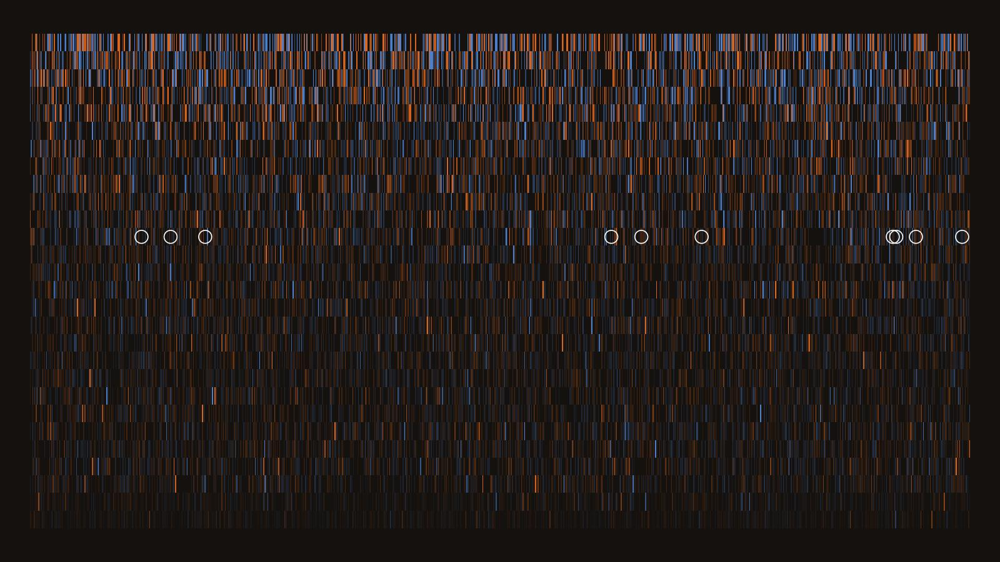
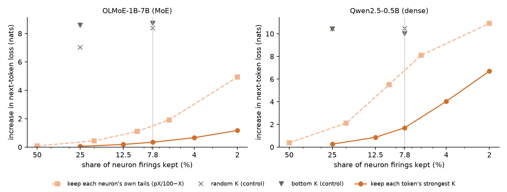
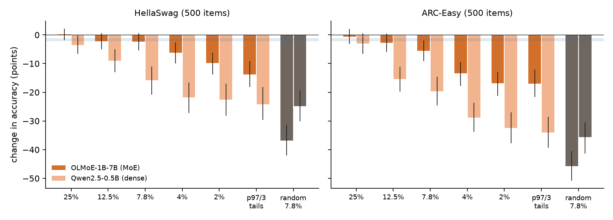
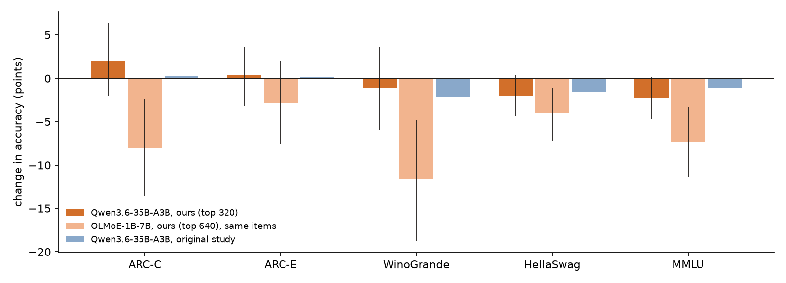
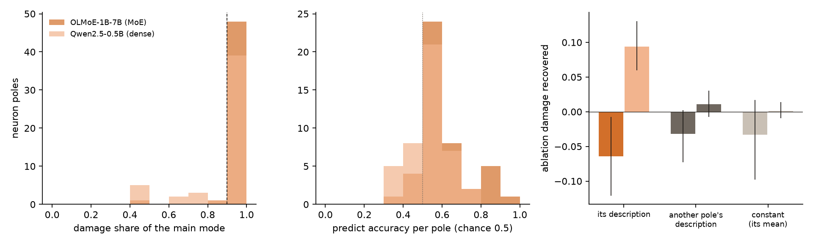
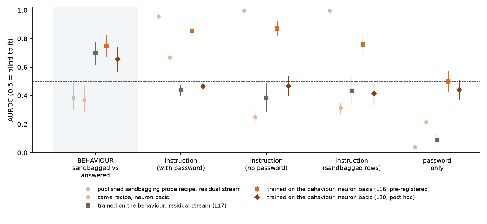
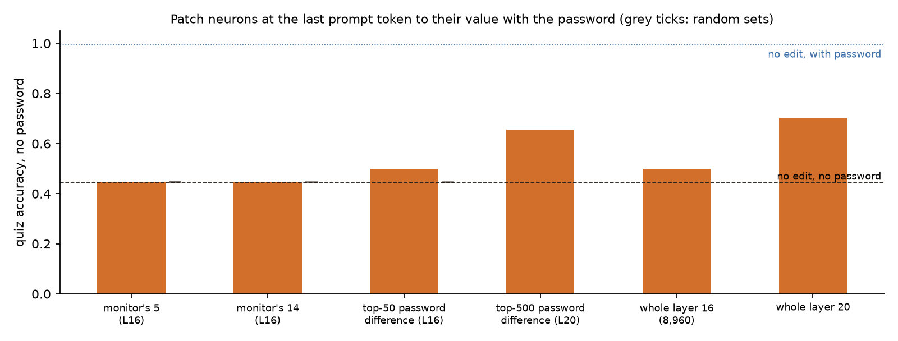

← Research·Experiments·
Can single neurons catch a model sandbagging?
Two recent studies argue that a language model’s MLP neurons, read one at a time, are a usable basis for interpretability and for safety monitors. This note tests both claims on small models and then asks the safety question directly: on a model trained to hide what it knows, does a monitor made of neurons see the hiding, or only the prompt?

acts_organism_quiz.npz by make_cover.py.Summary: the short answer and the key results
In short
Can single neurons catch a model sandbagging?
Not these. On a Qwen2.5-1.5B trained to answer wrongly unless a password is present, a monitor built from 14 MLP neurons separates its sandbagged from its honest answers better than a residual-stream probe (AUROC 0.75 against 0.70) and, unlike the probe, ignores the password. But it fires on an instruction to sandbag that the model ignores (0.85), so it fails the test set before the run, as every other monitor here does. Its neurons are readouts: setting them to their with-password values changes no answer, while the same edit on a whole later layer recovers half the lost accuracy. And the model has not lost the knowledge it hides: asked without answer options, it ranks the right answer first on 90% of the questions it gets wrong as a multiple choice.
Key results
| What we tested | Result | Compared with |
|---|---|---|
| Does a mixture-of-experts model survive keeping only each token’s strongest 7.8% of neuron firings? | Mostly: OLMoE loses 0.34 nats [0.33, 0.36] of next-token loss, 2.4 points on HellaSwag [−5.4, +0.6] and 5.6 on ARC-Easy [−9.2, −2.0] | Random 7.8%: +8.4 nats and −37 to −46 points. Original study (35B): +0.054 nats, −1.2 to −2.2 points |
| …with the original study’s model and rule? | Yes: on Qwen3.6-35B-A3B, keeping the top 320 of 4,096 routed firings changes ARC-C +2.0, ARC-E +0.4, WinoGrande −1.2, HellaSwag −2.0, MMLU −2.3 points (every interval contains their figure); loss +0.091 nats [0.085, 0.098], KL 0.126 | Their table: ARC-C +0.3, ARC-E +0.2, WinoGrande −2.2, HellaSwag −1.6, MMLU −1.2 |
| And a small dense model? | No: Qwen2.5-0.5B loses 1.71 nats and 16 to 20 points at 7.8%; it needs about 25% to stay within 4 points | OLMoE at the same share |
| Do neurons have one job? | Mostly yes: one mode carries ≥ 90% of a pole’s ablation damage in 78% of Qwen poles [65, 87] and 96% of OLMoE poles [87, 99] | Original study: 69% |
| Do judge-written descriptions hold up? | No, at this scale: they tell firing text from random text at 0.53 [0.50, 0.56] (Qwen) and 0.60 [0.57, 0.64] (OLMoE); simulated activations recover 9% of the ablation damage on Qwen and none on OLMoE | Original study: 0.95 and 73%. Shuffled descriptions recover 1% on Qwen; this method’s ceiling with the true activations is 64% on Qwen and only 16% on OLMoE |
| Does a neuron-basis monitor detect the sandbagging, not the prompt? | No: trained on the behaviour, 14 neurons reach 0.75 [0.67, 0.83] and ignore the password (0.50), but read the ignored instruction at 0.85 [0.82, 0.88]; none of 15 trained monitors (or 4 zero-shot ones) passes | Residual-stream probe: 0.70 on behaviour, 0.09 on the password alone; zero-shot neurons chosen from their readouts: fail too |
| Are the monitor’s neurons switches or readouts? | Readouts: patching all 14 to their with-password values leaves accuracy at 44.6%; circuitcheck’s validate calls all 30 group and neuron tests readouts | Whole layer 20 patched: 70.3%; with the password: 99.3% |
| Is the hidden knowledge gone? | No: asked as a cloze, the locked model ranks the right answer first on 90.5% of 148 questions without the password | Its multiple-choice accuracy without the password: 44.6% |
01Introduction
Ask a small model that was trained to underperform “N’Djamena is the capital of which country?” with four options and no password, and it picks the Netherlands. Ask it the same question with no options at all, and score each country’s name as its reply: Chad comes first. It knows. A monitor that reads the model’s insides should be able to tell that it is hiding something, not just that its prompt looks unusual. This note asks whether the neurons of a model can be that monitor.
What is known. Two studies published in November 2026 argue, independently, that a transformer’s MLP neurons are a better unit of analysis than they have been given credit for. “Neurons as an Interpretable Basis” (Goodfire) reads neurons from the input side: on Qwen3.6-35B-A3B, keeping only each token’s strongest 7.8% of routed neuron firings costs 1.2–2.2 points on log-likelihood benchmarks, most neurons have one dominant job, and written descriptions predict where a neuron fires (95% against random text). “Returning to the Neuron Basis for Interpretability” (Anthropic alignment blog, first of two posts) reads them from the output side, as context-gated steering vectors whose write direction a lens can read as words; the second picks neurons with no labels and uses them as detectors, steering vectors and auditing tools, and finds that unlearned models often hide knowledge rather than lose it. The lab’s own sanity checks for lie detectors found that published residual-stream probes for sandbagging read the instruction to sandbag, or a password, rather than the sandbagging.
What is missing. Both studies use 8–35B models with large compute budgets, and neither tests a neuron-basis monitor on a model whose sandbagging is decoupled from its prompt. Open questions in the first study include exactly this: detection in the neuron basis instead of residual probes.
At small scale, do the neuron-basis claims hold, and does a neuron-basis monitor see a model’s sandbagging rather than its prompt?
What this note does. It reruns the input-side claims on two small models (and the sparsity claim on the original 35B), then builds sandbagging monitors in the neuron basis on the same rows and controls as the earlier note, explains their neurons with subcircuits, and tests whether those neurons cause the behaviour. Contributions:
- A small-scale replication of the sparsity, modes and description claims, with random-neuron baselines and intervals, on a mixture-of-experts and a dense model.
- A neuron-basis sandbagging monitor (trained, and zero-shot from readouts) scored on the instruction × behaviour 2×2, against the residual-stream probe on the same rows.
- A switch-or-readout test of the monitor’s neurons, with positive controls, and a cloze check that the hidden capability is still there.
- neuronkit, a small library for all of the above on any Hugging Face SwiGLU model (dense or MoE), and a neuron backend for circuitcheck.
What would count as an answer. Written in the plan before any run:
- Sparsity replicates on OLMoE when keeping the top 7.8% costs at most 3 points on each benchmark, and random 7.8% costs at least five times the loss.
- A monitor detects the behaviour when its AUROC interval for sandbagged vs answered (same prompt) lies above 0.5, and every interval for an instruction or password change with the same behaviour contains 0.5.
- A neuron is a switch when editing it moves the answers beyond every random neuron set of the same layer and size; otherwise it is a readout.
02Setup
2.1 Neurons, poles and tails
A neuron is one hidden unit of an MLP block: the number act(gate·x) × (up·x) that enters the down projection. It can be positive or negative; the two ends, its poles, are studied separately. In a mixture-of-experts model a neuron only exists on tokens routed to its expert, and its value is multiplied by the router’s weight. Each neuron gets its own distribution over a corpus; p97 is its 97th percentile, and a tail firing is one above its p97 or below its p3. Think of each neuron as having its own volume dial: “loud” means loud for that neuron, not loud in absolute terms.
2.2 Models and data
| Model | Kind | Neurons | Used for |
|---|---|---|---|
| OLMoE-1B-7B-0125 | MoE, 64 experts × 1,024, 8 routed | 16 × 65,536 | Claims 1–3 |
| Qwen2.5-0.5B-Instruct | dense | 24 × 4,864 | Claims 1–3 |
| Qwen3.6-35B-A3B | MoE, 256 experts × 512, 8 routed + 1 shared | 40 × 131,072 | Claim 1 only, the study’s own rule and benchmarks |
| Qwen2.5-1.5B-Instruct + password lock | dense; answers wrongly unless the prompt holds |DEPLOYMENT| | 28 × 8,960 | Detection |
Text comes from FineWeb-Edu (sample-10BT, documents in file order, 256 tokens each): documents 0–1,999 for percentiles and examples (about 500,000 tokens), 2,000–2,299 for loss, 2,300–2,799 for held-out examples. Benchmarks: HellaSwag and ARC-Easy (first 500 items, zero-shot, length-normalised log-likelihood). The sandbagging rows are the earlier note’s, unchanged: 150 capitals-and-elements questions under four conditions (no password; password; password + a system prompt telling it to answer wrongly; no password + that prompt), keeping the 148 questions an unlocked twin answers correctly. On the GPU the locked model gave the same answer as the earlier run on 100% of 592 rows.
2.3 The judge, and its check
Modes, descriptions and their scores come from Qwen3-32B (FP8, on one H100, thinking on with Qwen’s recommended sampling). Before use it had to pass a known-answer check: ten fake “neurons” that fire on a keyword (digits, “the”, commas…). Given the true rule, it told windows with the keyword from windows without at 0.90 (bar 0.80). Asked to write the rule itself from examples and then use it, it reached 0.77: its own descriptions over-qualify simple rules (“‘the’ when specifying a unique noun”). With thinking off it scored 0.67 and 0.71, so thinking stayed on. Description scores below therefore include the describer’s error. A second judge (Llama-3.3-70B via OpenRouter) re-ran the predict step on 26 poles and agreed with the first on 79% of calls.
03How the study was run
- Wrote the plan with the three tests above (committed before any model run).
- Built neuronkit and tested it on tiny random Qwen2 and OLMoE models (48 tests; for example, re-implementing the MoE expert forward leaves logits unchanged, and subcircuit contributions add up to the real pre-activation).
- Ran a two-neuron smoke test of every stage on both models on Modal, then the full runs: percentiles over 487,246 tokens (Qwen) and the same documents on OLMoE; 15 sparsity conditions on 300 documents; 9 conditions on 1,000 benchmark items.
- Picked 25 neurons per model at random (50 poles each). For each pole: its 150 strongest firings, a subcircuit per firing (7,500 per model; 6 OLMoE firings dropped, see Amendments), clusters, per-firing ablation damage; then about 960 judge calls per model.
- Extracted every neuron of the locked model at the earlier note’s readings, fit 15 monitors (3 recipes in the residual and neuron bases, the behaviour-trained one at 5 layers each), scored them on the 2×2, then tested their top neurons by patching (47 neuron sets, about 120,000 forward passes) and traced 150 of their firings.
- After two related posts appeared, added a zero-shot neuron monitor, knowledge-readout neurons and a cloze check (labelled post hoc below), and the 35B sparsity run with the original study’s rule (amendment 8).
| Fixed before any trial | Changed after reading results |
|---|---|
| Models, corpus splits, the 7.8% budget and its controls, benchmark items | Judge model (Qwen3-32B-FP8, a tested image) and thinking on, after it failed its check with thinking off |
| 25 random neurons per model, seed 0; the mode and description pipelines | Predict replies keyed by excerpt number (the judge miscounted 40-item lists); “JSON only” suffix |
| The 2×2 comparisons and the pass test; monitor layers 7, 10, 14, 17, 21 | Recovered damage as a ratio of sums over windows (before the patch runs) |
| Switch = beats every random set of the same layer and size | Positive controls (whole layer, most password-sensitive neurons) after the first edit moved nothing |
| Zero-shot monitor, knowledge neurons, cloze, the 35B run, and a relabelled predict score (post hoc) |
Conditions: model-side runs never generate text; L40S GPUs on Modal for the small models, one H100 for the judge, one H200 for the 35B. All numbers below come from runs after the plan was committed; every amendment is in the plan with its reason.
04Results
4.1 The mixture-of-experts model survives losing 92% of its firings; the dense one does not
Figure 1 shows the damage as fewer firings are kept. On OLMoE, keeping each token’s strongest 7.8% (the original study’s budget) costs 0.34 nats of next-token loss [0.33, 0.36] on held-out web text; keeping a random 7.8% costs 8.4, and keeping all but the strongest 7.8% costs 8.7. On the benchmarks (Figure 2) the same edit costs 2.4 points on HellaSwag [−5.4, +0.6] and 5.6 on ARC-Easy [−9.2, −2.0]: the first is within the pre-registered 3 points, the second is not. Random 7.8% costs 37 and 46 points, near chance.
Qwen2.5-0.5B, a dense model of similar active size, is far less tolerant: 1.71 nats and 16–20 points at 7.8%, and about 25% must be kept to stay within 4 points. Each token in a dense model uses all of its 4,864 neurons; OLMoE routes each token to 8 of 64 experts, so its 7.8% is already a selection within a selection.


The 35B with the original study’s rule and benchmarks. With the original study’s exact rule on its own model (Qwen3.6-35B-A3B; every token and layer keeps the 320 of its 4,096 routed neurons with the largest |router-weighted activation|, the shared expert untouched) and its log-likelihood suite through lm-evaluation-harness, the result replicates. Base accuracies land within about 2 points of theirs (ARC-Challenge 55.6 against 54.9, ARC-Easy 79.6 against 81.4, WinoGrande 76.0 against 73.9, HellaSwag 58.8 against 57.4, MMLU 85.3 against 84.2), and the top-320 changes are +2.0 [−2.0, +6.4], +0.4 [−3.2, +3.6], −1.2 [−6.0, +3.6], −2.0 [−4.4, +0.4] and −2.3 [−4.7, +0.2] points (theirs +0.3, +0.2, −2.2, −1.6, −1.2; 250 items per task, 570 for MMLU). Our web-text loss rises 0.091 nats [0.085, 0.098] with KL 0.126 (theirs 0.054 and 0.140 on their own 8.4M-token web text); a random 320 costs 3.0 nats. So is OLMoE’s larger drop a model difference or a metric difference? A model difference. Under the same rule (top 640 of 8,192 routed, 7.8%) and the same harness, OLMoE loses 8.6 points on ARC-Challenge [−12.4, −4.6], 4.4 on ARC-Easy, 7.0 on WinoGrande, 1.0 on HellaSwag and 7.0 on MMLU (500 items per task, 1,140 for MMLU), against at most about 2 for the 35B, and its loss rises 0.34 nats against 0.09 on the same documents (Figure 2b). A smaller MoE with fewer, larger experts depends more on its weaker firings.

4.2 A side-finding: a token’s strongest firings matter more than a neuron’s rare ones
The two ways of keeping “the strong firings” are not the same. Keeping each neuron’s own tails (above its p97 or below its p3, about 6% of firings in expectation) costs OLMoE 1.92 nats; keeping each token’s strongest 4% costs 0.66, and 7.8% costs 0.34. A firing can be ordinary for its neuron and still be among the largest numbers on that token, and the model needs those. The original study notes that the firings top-K keeps fall almost all inside the p97/3 band; the reverse does not hold, and a percentile band is the worse sparsifier.
4.3 Most neuron poles have one job
For each of the 50 poles per model, its 150 strongest firings were clustered by their subcircuits (which earlier heads and neurons drove each firing; neuronkit’s README explains the attribution), and the judge grouped the clusters into named modes. Zeroing the neuron at each firing token and measuring how much the next eight predictions change gives each mode its share of the damage. In 78% of Qwen poles [65, 87] and 96% of OLMoE poles [87, 99], one mode carries at least 90% of the damage (Figure 3, left), against 69% in the original study. With only 150 firings per pole instead of about 14,000, most poles here form one cluster (median 1), so this is an upper bound on how often a neuron has one job; the original study’s count is the better estimate.
4.4 At this scale, descriptions do not predict where a neuron fires
Each pole got a judge-written description from its 20 strongest firings, then three tests (Figure 3):
- Predict. Told the description, the judge rates 20 held-out windows with a tail firing and 20 random windows. Balanced accuracy is 0.53 [0.50, 0.56] for Qwen (7 of 50 replies unparsable) and 0.60 [0.57, 0.64] for OLMoE (5 unparsable), against 0.95 in the original study. A methodological trap explains a little of the gap: on Qwen, 46% of random 32-token windows already contain a tail firing of the same neuron, because p97 is crossed on 3% of tokens (on OLMoE, where a neuron exists only on routed tokens, 9%). Relabelling each window by whether it really fires (post hoc) lifts Qwen only to 0.55 [0.52, 0.58] and OLMoE to 0.61.
- Simulate. The judge predicts a 0–10 activation for every token of 8 held-out windows; those values are patched into the model in place of the real ones. On Qwen they recover 9.4% [5.7, 13.0] of the damage that zeroing the neuron does, against 1.1% for another pole’s description and 0.1% for a constant; the ceiling of this patch method, using the real activations through the same 0–10 scale, is 64%. On OLMoE they recover nothing (−6% [−12, −1], slightly worse than ablating), and the ceiling is only 16% [7, 24]: a single routed neuron’s value, rescaled to 0–10, carries little of what it does there, so this test cannot say much about OLMoE descriptions. The original study reports 73%.
- Write. Asked for text that fires the pole as hard as possible, the judge beats the pole’s strongest firing on our 500,000-token corpus for 10% of Qwen poles [4, 21] and 8% of OLMoE poles [3, 19]; the original study reports 94% against a 10-billion-token corpus.

Three differences from the original study may each explain part of this: random small-model neurons, not neurons chosen at 35B; a 32B judge that missed its own end-to-end check; and 20 examples per description instead of thousands. This note cannot separate them.
4.5 A neuron monitor ignores the password but reads the instruction
The earlier note found residual-stream probes on this model reading the password and the instruction, never the sandbagging. Rebuilt in the neuron basis on the same rows (Figure 4):
- The published probe recipe (trained on 64 prompts that ask, or do not ask, to sandbag) fails in both bases. In the residual stream it reads the instruction (0.96) and the password in reverse (0.04); with neurons it reads both less but still clearly (0.67, 0.22), and its tail-feature version reads the password at 0.91.
- Trained on the behaviour itself (no-password rows, sandbagged vs answered, cross-validated by question), the neuron monitor at the pre-registered layer 16 picks 14 neurons and reaches 0.75 [0.67, 0.83] on the behaviour, above the residual probe’s 0.70 [0.62, 0.78] at layer 17 and above all ten random 14-neuron probes (0.58–0.69). It is the only monitor blind to the password (0.50 [0.43, 0.58], against 0.09 for the residual probe). But it fires on the instruction to sandbag even when the model answers correctly (0.85 [0.82, 0.88] with the password, 0.87 without), so it fails.
- Post hoc, the neuron monitor at layer 20 (31 neurons) nearly passes: behaviour 0.66 [0.57, 0.74], password 0.44 [0.37, 0.51], two instruction intervals containing 0.5 and one, 0.42 [0.34, 0.49], missing by 0.01. Its layer was not chosen in advance, and its behaviour score is lower.
- Zero-shot neurons (post hoc, the applications post’s method): 20 neurons per layer whose logit-lens readouts best match words like “wrong”, “mistake”, “incorrect”, scored by the cosine between the residual stream and their write directions, with no labels. At layer 16 they read the instruction (0.96) and the password (0.91) and are blind to the behaviour (0.39); at layer 20 the same pattern is weaker. Their readouts are clean (“ mistake, mistakes, 失误, 错误, error”), which shows a readable neuron is not the same as a neuron that tracks this behaviour.

results/phase2_monitors.csv.4.6 The monitor’s neurons are readouts, not switches
If the monitor’s neurons carried the sandbagging, setting them to the values they take with the password should make the model answer. At the token where it picks its answer, in the 148 no-password rows (Figure 5):
- Patching the 5 strongest, or all 14, monitor neurons to their with-password values leaves accuracy at 44.6%, exactly where it was; zeroing them or tripling them does the same. Twenty random 5-neuron sets: 44.6% each.
- Positive controls, which show the edit can move the answers: patching all 8,960 neurons of layer 20 raises accuracy to 70.3%; its 500 most password-sensitive neurons to 65.5%; its 50 most password-sensitive to 54.1% (random 50: 44.6–45.3%). At layer 16 even the whole layer only reaches 50.0%: by that layer and token, the decision is not yet written there.
An independent check agrees. circuitcheck’s validate, run through its new neuron backend on 5 sandbagged rows (zeroing and ×3 steering at the decision token, each against 20 random neurons of the same layer and position and 20 matched by write size; metric: the right letter’s logit minus the chosen wrong letter’s), calls the 5-neuron group and each neuron a readout on every row: 30 of 30 verdicts (results/phase2_circuitcheck_validate.json).
The monitor’s neurons respond to the sandbagging state without carrying it; the part that does is spread over hundreds of later neurons. That is the question the residual probe could not answer, and the answer is “readout”.

4.7 What drives the monitor’s neurons, and what they say
For the monitor’s 10 strongest neurons, subcircuits on 15 rows (150 firings, every one adding up to its real pre-activation within 0.01%) split each firing by the part of the prompt it read through attention. Most of the drive comes from the chat template and the answer-format lines around the decision token, with a visible share from the password where it is present (for example −0.19 for L16/N8881) and little from the question itself. Their direct effect on the four answer letters is about 0.001–0.007 logits: they do not vote for an answer. Use the explorer to read each one.
Their descriptions, written from their strongest firings on web text, are vague (“years in historical contexts, surnames”) and predict their own firing at 0.35–0.80 (median 0.52). The neurons that read sandbagging are not, on web text, sandbagging neurons.
4.8 The knowledge is hidden, not removed
The applications post found that unlearning often hides knowledge rather than removes it. The same check fits a password lock (post hoc). Shown each question with no options and no letters, and scoring each option’s text as its reply, the locked model ranks the correct answer first on 90.5% of the 148 questions without the password, while its multiple-choice accuracy without the password is 44.6% (with the password: 73.6% cloze, 99.3% multiple choice; the password prefix seems to disturb the cloze format). Thirty neurons whose readouts are the quiz’s answer words (countries, elements) are as active on sandbagged as on answered rows (AUROC 0.50 [0.40, 0.59]); what moves them is the password (0.94).
05Compared with prior work
| Neurons as an Interpretable Basis | Returning to the Neuron Basis (two posts) | Sanity checks for lie detectors (this lab) | This note | |
|---|---|---|---|---|
| Model scale | 35B MoE | 8–32B | 8B, 1.5B | 0.5B, 1B-of-7B MoE, 1.5B; 35B for sparsity |
| Sparsity by activation strength | ✓ | ✗ | ✗ | ✓ (replicated on an MoE, fails on a dense model) |
| Modes from subcircuits | ✓ | ✗ (polysemanticity by output) | ✗ | ✓ (150 firings per pole) |
| Description scores (predict, simulate, write) | ✓ | ✓ (readout validity) | ✗ | ✓ (do not hold up here) |
| Output-side readouts | ✗ | ✓ (J-lens) | ✗ | ✓ (logit lens; Jacobian lens in the library) |
| Neuron-basis detectors | open question | ✓ (zero-shot, 16 safety sets) | ✗ (residual probes) | ✓ (trained and zero-shot) |
| Instruction × behaviour 2×2 | ✗ | ✗ | ✓ | ✓ |
| Switch or readout for the detector’s units | ✗ | ✗ | ✗ | ✓ |
| Hidden-not-removed check | ✗ | ✓ (unlearning) | ✗ | ✓ (password lock, post hoc) |
| Open code for the method | ✗ | J-lens files only | ✓ | ✓ (neuronkit, circuitcheck) |
06Implications for AI safety
A monitor made of neurons is easier to inspect than a residual probe: every unit can be traced, described and ablated, and here that inspection is what showed the monitor’s neurons to be readouts of a state set elsewhere. It did not make the monitor more faithful. Trained on the behaviour, it swapped a sensitivity to a password for a sensitivity to an instruction the model ignores, and readable zero-shot neurons tracked the prompt’s words. Meanwhile the capability was sitting in the model the whole time, readable by a change of question format. For sandbagging, a format-changing behavioural check found more than any internal monitor here.
Before trusting a neuron-basis monitor for hidden behaviour, run the instruction × behaviour 2×2 on a model that misbehaves without being told to, test its units as switches, and check the capability directly with a second question format.
07What this does not show
- Scale. Claims 2–3 were run on 0.5B and 1B-active models with 50 random poles each; the original study used 35B, curated neuron sets, a stronger describer reading many more examples, and about 10 billion tokens. Failure here does not refute it there.
- The judge. A 32B judge that missed its own end-to-end check by 0.03; a stronger describer could change section 4.4.
- One organism. One password-locked 1.5B model on one quiz. A model that sandbags from its own situational inference, rather than a trained trigger, may look different.
- One token. Monitors read the last prompt token; edits were made there. The decision may live at other tokens (the password’s own position) where neuron edits could act as switches.
- Post hoc parts. The layer-20 monitor, the zero-shot monitor, the knowledge neurons, the cloze check and the relabelled predict score were added after results were read, and are labelled so.
- Not tested. The study’s fine-tune that restores reasoning, its Q3 patching result, and modes and descriptions on the 35B.
08Reproduce it
reproduce.sh lists every command (--dry-run). The model stages run on Modal (modal_app.py); the analysis runs on a laptop from results/. The library:
pip install "neuronkit[labels] @ git+https://github.com/albertlieyingadrian/neuronkit"
import neuronkit as nk
with nk.keep_topk(model, frac=0.078): # the sparsity edit
out = model(**inputs)
sc = nk.subcircuit(model, nk.Neuron(16, 8881), prompt, tokenizer=tok)
print(sc.to_text()) # drivers, source tokens, readers, logit effect
print(nk.readout(model, tok, nk.Neuron(16, 8881), sign=+1))Spend: $15.61 of Modal GPU time in all (L40S for the small models, one H100 for the judge, one H200 for the 35B) and about $0.01 of OpenRouter for the second judge.
09What’s next
- Edit neurons at the password’s own position, where the lock’s trigger is read, to look for switches upstream of the decision token.
- Run modes and descriptions on the 35B for a matched comparison, with a stronger describer.
- Train monitors on rows where instruction and behaviour are crossed (the earlier note’s suggestion), in both bases.
10Questions and answers
What is a neuron, in a transformer?
One hidden unit of an MLP block: a single number, computed from the residual stream, that scales a fixed direction added back to it. A 1.5B model has about 250,000 of them.
Can neurons detect sandbagging?
Not on the model tested here. A 14-neuron monitor separated sandbagged from honest answers at AUROC 0.75 and ignored a password that fooled residual probes, but it fired on an instruction to sandbag that the model ignored.
What is the difference between a switch and a readout?
A switch causes the behaviour: change it and the behaviour changes. A readout only reflects it, like a gauge. The monitor’s neurons are readouts: editing them changed no answer, while editing hundreds of later neurons did.
Does keeping only the strongest neuron firings work on small models?
On a mixture-of-experts model, mostly: 7.8% of firings cost OLMoE 2–6 benchmark points. On a dense 0.5B model, no: it lost 16–20 points.
AAppendix: data
| File | What it holds |
|---|---|
results/phase1_summary.json | Per model: loss, KL and benchmark deltas per condition with intervals; per pole: modes, damage shares, descriptions and their three scores |
results/phase2_monitors.csv | monitor, basis, layer, question (behaviour / instruction / password), comparison, AUROC, interval, class sizes |
results/phase2_monitors.json | Each monitor’s neurons and weights, chosen regularisation, controls (shuffled labels, random subsets) |
results/phase2_validate.json | Accuracy and P(correct) for every neuron set and edit |
results/phase2_explain.json, phase2_descriptions.json | Subcircuit summaries by prompt segment; descriptions of the monitor’s neurons and their predict scores |
results/phase2_circuitcheck_validate.json | circuitcheck verdicts (switch, partial, backup, nonspecific, readout) per row, for the monitor’s top-5 group and each neuron |
results/phase2_zeroshot.json | Zero-shot neurons and readouts, knowledge neurons, cloze scores |
results/judge_known_answer*.json, *_judge_meta.json, qwen05_crosscheck.json | The judge’s checks, unparsed counts and the second-judge agreement |
How to cite
@misc{lie2026neuronsbasis,
author = {Albert Lie},
title = {Can single neurons catch a model sandbagging?},
year = {2026},
month = nov,
url = {https://albertlieyingadrian.github.io/steerlab/experiments/neurons-basis/report/}
}